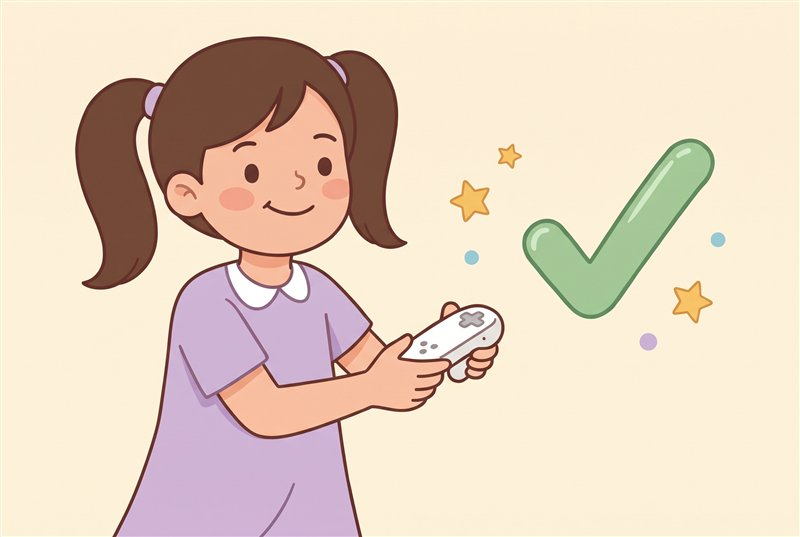
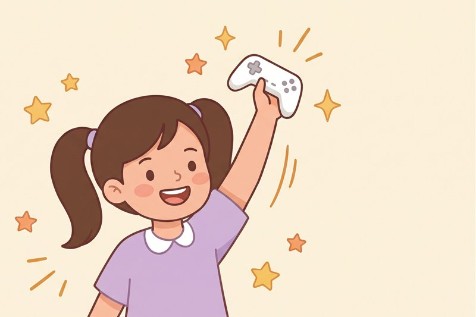
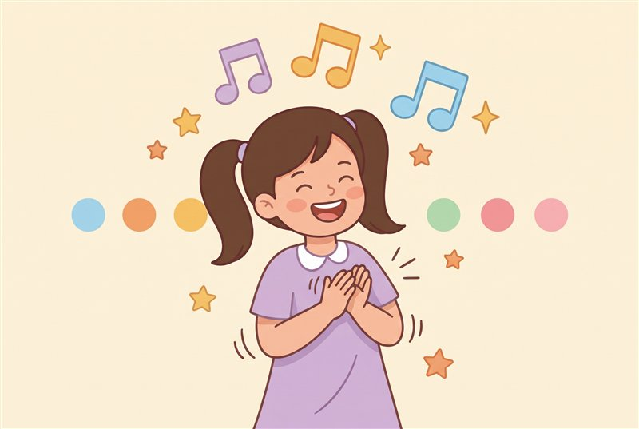
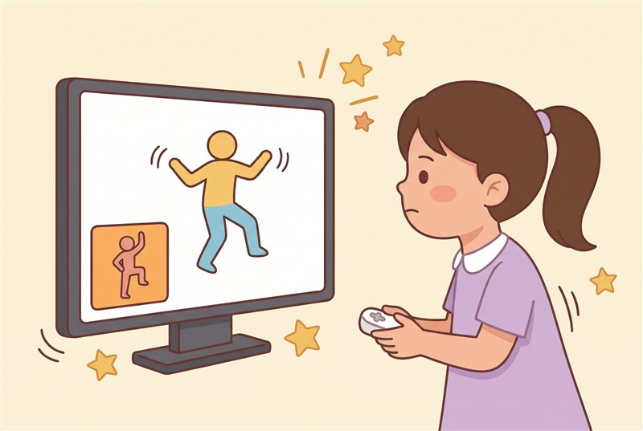
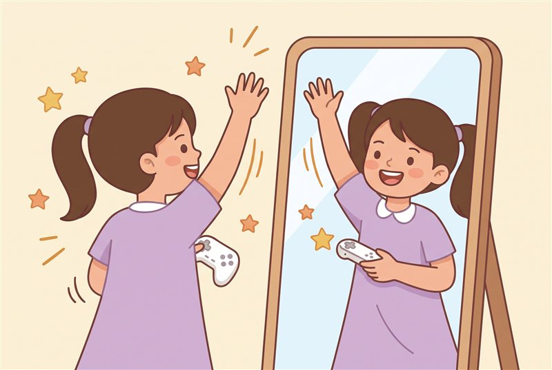
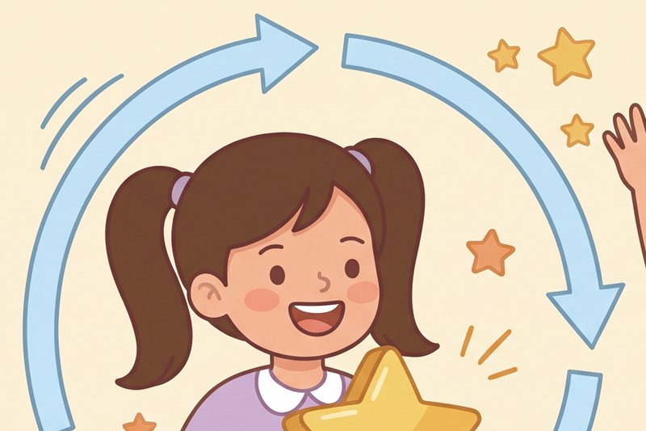
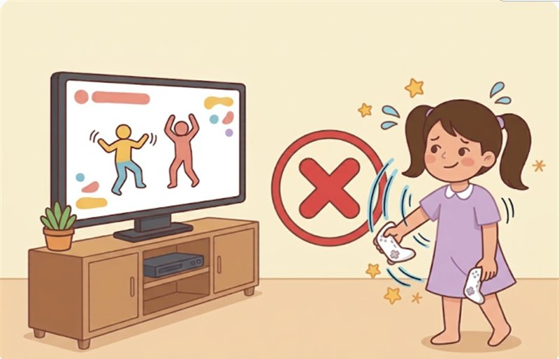
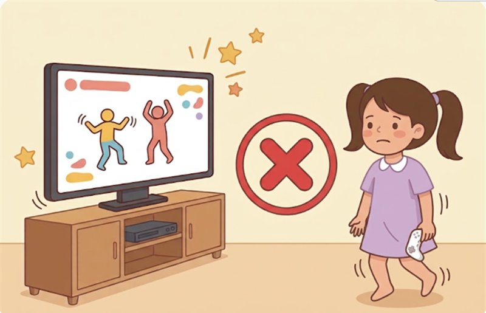
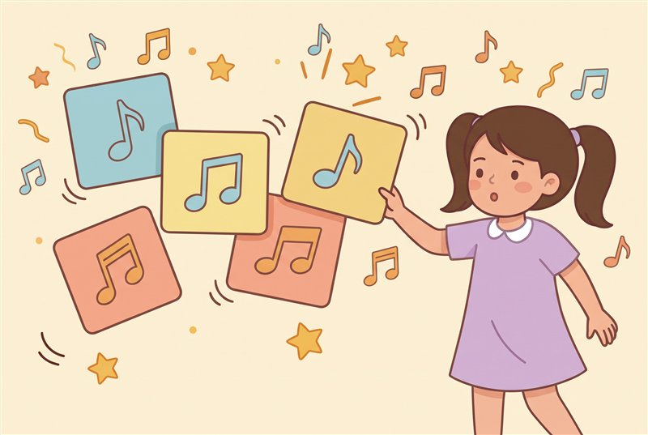

怎麼跳高分
做好這六件事，分數就有機會變高！
結論
遊戲主要看拿 Joy-Con 的手，要做對！
跳高分的六個關鍵

拿好 Joy-Con
照畫面拿好，不要晃來晃去。

手伸長長
手臂伸直，動作做大一點。

跟上節拍
聽音樂數節拍，不要慢一拍。

看著舞者
看舞者，偷看小圖知道下一步。

像照鏡子
舞者往右邊，你也往右邊。

多跳幾次
多跳幾次，金色動作要做好！
不要這樣做

只甩手

只動腳

先選難歌
給家長看：六個關鍵的補充與分數低的原因
- 拿好 Joy-Con：依遊戲畫面的指示握好，手腕也要固定好。有玩家反映評分對握法很敏感。
- 手伸長長：每個動作都做得清楚俐落。動作只做一半，是常見的失分原因之一。
- 跟上節拍：看到舞者動了才跟著動，時間點通常會偏晚。先聽熟節拍，並且提前準備下一個動作。
- 看著舞者：舞者告訴你手怎麼移動，圖示則是預告。不要盯著圖示等亮燈才動，那樣通常會來不及。
- 像照鏡子：舞者往畫面右邊伸手，你也往自己的右邊伸手，不用先想舞者用的是哪一隻手。
- 多跳幾次：記住動作後反應會變快。金色動作（Gold Move）有額外加分。
Ubisoft 在 2023 年調整評分，改成更重視準確度，只靠甩手很難再拿高分。
孩子分數特別低的可能原因（推測，非官方說法）：手臂較短使動作訊號較小、手沒有伸到位、看到舞者動了才動所以慢半拍、Joy-Con 握歪或手腕亂轉。分數低不代表跳得不好，因為主要只有手的動作被算進去。